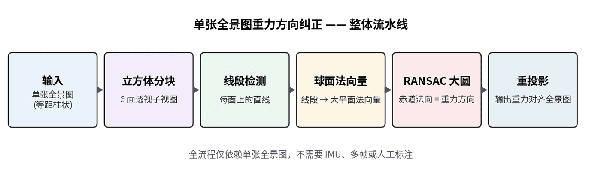
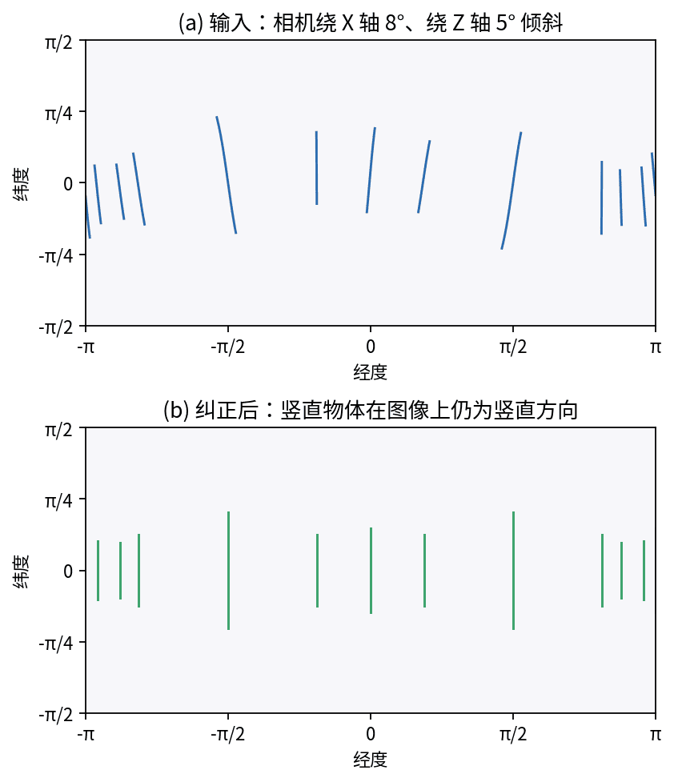

Gravity alignment from a single equirectangular image.
Single-Panorama Gravity Rectification
A preprocessing module that estimates and removes camera tilt from one panorama so later stages can operate under a gravity-aligned image assumption.
Problem
Even small camera tilt adds extra pose degrees of freedom, weakens Manhattan assumptions, causes depth fusion artifacts, and makes visualization feel unstable. IMU and floor-normal cues are not always available or reliable.
Approach
- Split the panorama into cube faces and detect line segments in local perspective views.
- Convert line evidence into spherical constraints that vote for the gravity-aligned great circle.
- Use robust fitting to estimate tilt and rectify the panorama before downstream reconstruction.
My Contribution
I independently designed and implemented the complete single-panorama gravity rectification module, from algorithm to C++ production integration.
On the algorithm side, I built the core modules:
- Cube-face reprojection and line segment detection in local perspective views
- Spherical line-to-normal conversion and great-circle RANSAC for gravity estimation
- Equirectangular reprojection for gravity-aligned output with camera pose update
Outcome
Gravity alignment simplifies later pose estimation, plane reasoning, depth fusion, and panoramic visualization.

